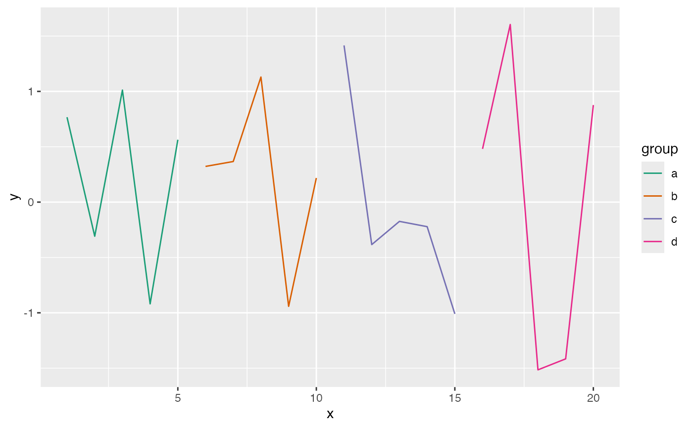

Generates a colorblind-friendly palette for use in plots.
Details
The function uses the ColorBrewer palettes through the RColorBrewer package. For qualitative data, it uses the "Dark2" palette which is colorblind-friendly. For sequential data, it uses the "Blues" palette. For diverging data, it uses the "RdBu" palette.
Examples
# Get 4 colors for categorical groups
colors <- get_colorblind_palette(4)
# Use in a plot
df <- data.frame(
x = 1:20,
y = rnorm(20),
group = rep(letters[1:4], each = 5)
)
library(ggplot2)
ggplot(df, aes(x, y, color = group)) +
geom_line() +
scale_color_manual(values = colors)
